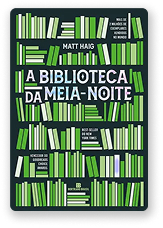

Verbum

Favoritos


A biblioteca da Meia-Noite
Matt Haig
Nota com stars
4,0
Aos 35 anos, Nora Seed é uma mulher cheia de talentos e poucas conquistas. Arrependida das escolhas que fez no passado, ela vive se perguntando o que poderia ter acontecido caso tivesse vivido de maneira diferente...